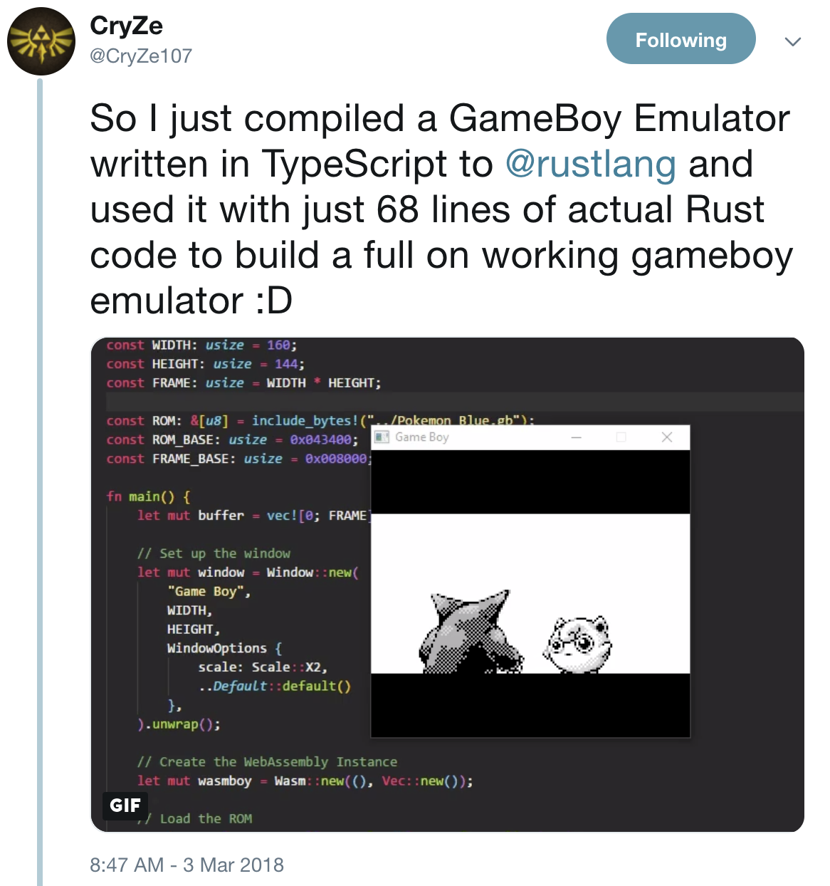

Working with Rust (in the beginning) is like banging your head against the wall
Let's set expectations!
Caveat: Rust code will _always_※ be longer, more verbose, and more intricate than the JS alternative.
※ … not always, but close enough. It's a healthier mindset to go into Rust expecting thing.
Rust is a systems programming language that runs blazingly fast, prevents segfaults, and guarantees thread safety.
Rust for JavaScripters:
Predictable performance from control over e.g. memory layout, collection.
Manually ensuring data integrity is tough
Manually ensuring data integrity with concurrent access is beyond tough
What are types for?
public class Prime {
public static void main(String[] args) {
int num = 29;
boolean flag = false;
for(int i = 2; i <= num/2; ++i)
{
if(num % i == 0)
{
flag = true;
break;
}
}
if (!flag)
System.out.println(num + " is a prime number.");
else
System.out.println(num + " is not a prime number.");
}
}
Can we do better?
Type inference!
fn main() {
// Because of the annotation, the compiler knows that `elem` has type u8.
let elem = 5u8;
// Create an empty vector (a growable array).
let mut vec = Vec::new();
// At this point the compiler doesn't know the exact type of `vec`, it
// just knows that it's a vector of something (`Vec<_>`).
// Insert `elem` in the vector.
vec.push(elem);
// Aha! Now the compiler knows that `vec` is a vector of `u8`s (`Vec u8`)
println!("{:?}", vec);
}
the compiler is happy
and so is the programmer!
Delivery over the web puts pressure on payload size
At present, Go generates large Wasm files, with the smallest possible size being around ~2MB. If your Go code imports libraries, this file size can increase dramatically. 10MB+ is common.
(Go is rapidly improving here, with TinyGo outputting e.g. ~10kB )
fn main() {
let greetings = ["Hello", "안녕하세요", "Hej"];
for (num, greeting) in greetings.iter().enumerate() {
print!("{} : ", greeting);
match num {
0 => println!("This code is editable and runnable!"),
1 => println!("여기에서 코드를 수정하고 실행할 수 있습니다!"),
2 => println!("Den här koden kan redigeras och köras!"),
}
}
}
Not just pattern matching, exhaustive pattern matching!
fn main() {
let greetings = ["Hello", "안녕하세요", "Hej"];
for (num, greeting) in greetings.iter().enumerate() {
print!("{} : ", greeting);
match num {
0 => println!("This code is editable and runnable!"),
1 => println!("여기에서 코드를 수정하고 실행할 수 있습니다!"),
2 => println!("Den här koden kan redigeras och köras!"),
}
}
}
error[E0004]: non-exhaustive patterns: `_` not covered
--> src/main.rs:6:15
|
6 | match num {
| ^^^ pattern `_` not covered
For more information about this error, try `rustc --explain E0004`.
$ rustc –explain E0004
This error indicates that the compiler cannot guarantee a matching pattern for one or more possible inputs to a match expression. Guaranteed matches are required in order to assign values to match expressions, or alternatively, determine the flow of execution. Erroneous code example:
``` enum Terminator { HastaLaVistaBaby, TalkToMyHand, }
let x = Terminator::HastaLaVistaBaby;
match x { // error: non-exhaustive patterns: `HastaLaVistaBaby` not covered Terminator::TalkToMyHand => {} } ```
If you encounter this error you must alter your patterns so that every possible value of the input type is matched. For types with a small number of variants (like enums) you should probably cover all cases explicitly. Alternatively, the underscore `_` wildcard pattern can be added after all other patterns to match "anything else". Example:
``` enum Terminator { HastaLaVistaBaby, TalkToMyHand, }
let x = Terminator::HastaLaVistaBaby;
match x { Terminator::TalkToMyHand => {} Terminator::HastaLaVistaBaby => {} }
// or:
match x { Terminator::TalkToMyHand => {} _ => {} }
fn main() {
let greetings = ["Hello", "안녕하세요", "Hej"];
for (num, greeting) in greetings.iter().enumerate() {
print!("{} : ", greeting);
match num {
0 => println!("This code is editable and runnable!"),
1 => println!("여기에서 코드를 수정하고 실행할 수 있습니다!"),
2 => println!("Den här koden kan redigeras och köras!"),
_ => println!("Now all our bases are covered!")
}
}
}
Debugging sucks.
From easiest to hardest:
Who should do it?
The Language > the compiler > the linter > the tests > the developer > the user
Similar to Elm, Rust pushes the debugging experience up front.
Very common (though not universal) that a compiling program "just works."
Combining JavaScript and Rust
Caveat: Using wasm (and therefore Rust) from JS is uncomfortable and unidiomatic by default.
Sending data JavaScript↔WebAssembly by default involves allocations - something we initially wanted to avoid!
+-------------------+ | +---------------------+
|JavaScript | | | RUST |
+-------------------+ | +---------------------+
| | 1. "hi!" |2. "hi!" | |
|wasm.greet("hi!") |-----------+---------> greet(msg..) { |
| | | | .... |
| | 2. "hey!" |1. "hey!"| "hey!" |
| |<----------+---------| } |
+-------------------+ | +---------------------+
Goals:
How?
+-------------------+ | +---------------------+ |JavaScript | | | RUST | +-------------------+ | +---------------------+ | | | | | | | | | | | | | | | | | | | | | | | | | +-------------------+ | +---------------------+
+-------------------+ | +---------------------+ |JavaScript | | | RUST | +-------------------+ | +---------------------+ | DOM | | | | | Garbage Collection| | | | | Familiar objects | | | | | Arrays | | | | | String | | | | +-------------------+ | +---------------------+
+-------------------+ | +---------------------+ |JavaScript | | | RUST | +-------------------+ | +---------------------+ | DOM | | | Performance | | Garbage Collection| | | Manual memory | | Familiar objects | | | Custom "objects" | | Arrays | | | Custom "arrays"+Vec | | String | | | String and str | +-------------------+ | +---------------------+
> WebAssembly has a very simple memory model. A wasm module has access to a single "linear memory", which is essentially a flat array of a bytes.
+-------------------+ +---------------------+
|JavaScript | | RUST |
+-------------------+ +---------------------+
| DOM | | Performance |
| Garbage Collection| | Manual memory |
| Familiar objects | | Custom "objects" |
| Arrays | | Custom "arrays"+Vec |
| String | | String and str |
+-------+-----------+ +----------+----------+
| +---------------+ |
| | Shared memory | |
| +---------------+ |
| | | |
| |Plain ol' bytes| |
+--------------+ +-------------+
| |
+---------------+
Lingua franca: [Uint8/etc.]Array
#[wasm_bindgen]
#[repr(u8)]
#[derive(Clone, Copy, Debug, PartialEq, Eq)]
pub enum Cell {
Dead = 0,
Alive = 1,
}
pub fn tick(&mut self) {
let mut next = self.cells.clone();
for row in 0..self.height {
for col in 0..self.width {
let idx = self.get_index(row, col);
let cell = self.cells[idx];
let live_neighbors = self.live_neighbor_count(row, col);
let next_cell = match (cell, live_neighbors) {
// Rule 1: Any cell with fewer than two live neighbors dies
(Cell::Alive, x) if x < 2 => Cell::Dead,
(Cell::Alive, 2) | (Cell::Alive, 3) => Cell::Alive,
(Cell::Alive, x) if x > 3 => Cell::Dead,
(Cell::Dead, 3) => Cell::Alive,
(otherwise, _) => otherwise,
};
next[idx] = next_cell;
}
}
self.cells = next;
}
pub fn new() -> Universe {
let width = 64;
let height = 64;
let cells = (0..width * height)
.map(|i| {
if i % 2 == 0 || i % 7 == 0 {
Cell::Alive
} else {
Cell::Dead
}
}).collect();
Universe {
width,
height,
cells,
}
}
pub fn render(&self) -> String {
self.to_string()
}
/* tslint:disable */
export enum Cell {Dead,Alive,}
export class Universe {
free(): void;
tick(): void;
static new(): Universe;
render(): string;
}
Yew ("you") is a modern Rust framework inspired by Elm and ReactJS for creating frontend apps with WebAssembly.
The framework supports multi-threading & concurrency out of the box. It uses Web Workers API to spawn actors (agents) in separate threads and uses a local scheduler attached to a thread for concurrent tasks.
html! {
{ "todos" }
{ view_input(&model) }
{ view_entries(&model) }
}
#[derive(Serialize, Deserialize, Debug)]
pub enum Request {
Question(String),
}
#[derive(Serialize, Deserialize, Debug)]
pub enum Response {
Answer(String),
}
impl Agent for Worker {
// Create an instance with a link to agent's environment.
fn create(link: AgentLink) -> Self {
Worker { link }
}
// Handle incoming messages from components of other agents.
fn handle(&mut self, msg: Self::Input, who: HandlerId) {
match msg {
Request::Question(_body) => {
self.link.response(who, Response::Answer("That's cool!".into()));
},
}
}
}
// Import the WebAssembly memory at the top of the file.
// The 'hello_world_bg' module is generated by wasm-bindgen,
// hence the '_bg'.
import { memory } from "./hello_world_bg";
const getIndex = (row, column) => {
return row * width + column;
};
const drawCells = () => {
const cellsPtr = universe.cells();
const cells = new Uint8Array(memory.buffer, cellsPtr, width * height);
ctx.beginPath();
for (let row = 0; row < height; row++) {
for (let col = 0; col < width; col++) {
const idx = getIndex(row, col);
ctx.fillStyle = cells[idx] === DEAD
? DEAD_COLOR
: ALIVE_COLOR;
ctx.fillRect(
col * (CELL_SIZE + 1) + 1,
row * (CELL_SIZE + 1) + 1,
CELL_SIZE,
CELL_SIZE
);
}
}
ctx.stroke();
};
https://github.com/likr/rust-webgl2-example/blob/master/src/main.rs
error: cannot borrow immutable argument `b` as mutable (it's an immutable reference)`.
--> :2:18
|
1 | fn foo(b: &mut u64) {
| - use `mut b` here to make mutable (Or see another option below):
2 | let x = &mut b;
| ^ cannot borrow mutably, but can move it out by removing '&mut'.
Rust

Our industry moves forward via secretion
Our implementations, if successful, never die.
We have "terminals" that support DEC VT escape sequences, with various extensions added over the decades.
First time we have a chance for a clean-slate, safe implementation to gather sufficient momentum
In the next five-ten years, most JavaScript we run will be written in Rust
I don't think most people will write Rust on the frontend, but ultimately most people will use it (even if they don't realize it)
… Library authors!
Working with Rust (in the beginning) is like banging your head against the wall
… but at a very slight angle
… and you'll like it!